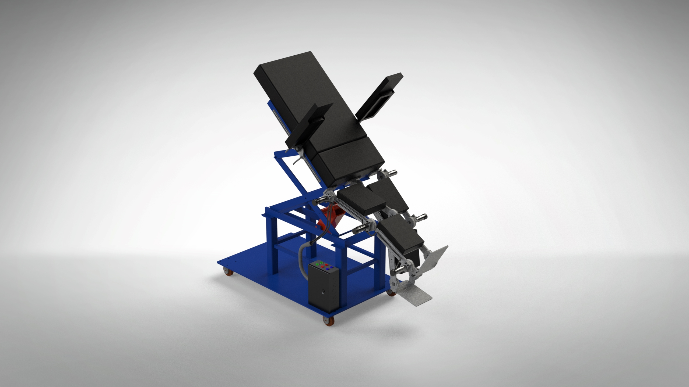

Robotic Walking Training Device - Team Lead
Click on the image below to view a video of this presentation:
This was my Senior Capstone Project and was definitely the most challenging. I was tasked with assembling a team of my peers both in Mechanical and Electrical engineering paths. I sought out individuals whom I had seen excel in other projects or whom I had worked with before and knew their work ethic.
The project was to create a device which would be used in the biomedical field to rehabilitate persons who had suffered from a stroke or minor spinal cord injury (SCI) and who had lost some or all motor function in their lower limbs. The idea was that through repetitive and guided motion of a natural gait, along with muscular stimulation from a Functional Electrical Stimulator (FES), and working in tandem as the step was being taken, that it would retrain muscular and neural pathways for quicker and more effective rehabilitation.
I knew that this was to be a monumental project, as we had to not only design, but actually manufacture this device while upholding medical standards.This was to be the 3rd generation of the project; however, when we were presented with the work that previous teams had done, we became aware that their design was not up to the standards of the customer, and would be nearly impossible to achieve those standards with said design. While their machine did function, it was created from plastic and not very stable. Additionally, the method of movement (linkages) were not very adaptable for a variety of patient sizes.
We were faced with a ground-up redesign, and had to stay under a $2,000 budget.
We set out to create an optimal design. To start, we delved into research, combing through dozens of papers on how to recreate a gait cycle. At first, we tried to still use linkages, but soon found that those were extremely difficult to adapt to patients. So, we opted for a type of exoskeleton.
No one on the team was very familiar with SolidWorks, but we soon found that it was the best way to design our product. Myself and one other teammate set out to learn SolidWorks from scratch and began designing the over 200 parts for our assembly.
Slowly, we put the pieces together into subassemblies.
This is the arm assembly:

Below is the basis for our leg movement:

We faced challenges not only with the design, but also in keeping strength-to-weight considerations in mind, as well as center of mass calculations. Additionally, we had to program 6 motors to work perfectly in tandem. We used motion capture systems to measure the gait of several people and used the extrapolated data as a basis for the coding. The leg assembly and motion is below:
Finally, we pieced it all together into the final assembly:
I led a design review of the product in front of our sponsor, the Dean, our faculty advisor, and several engineering faculty to meticulously detail every aspect of our design, as well as show that we had done our due diligence to prove that it would work. To give the best presentation that I could, I took it upon myself to learn SolidWorks Visualize in order to create realistic renderings of the project. I also learned more about ANSYS to perform FEA on the key components of the project. Then, using Microsoft Office Suite, as I had dozens of times before, I put together the design review presentation and practiced diligently to present our project professionally and clearly.
To view the Presentation for this project, CLICK HERE:
Finally, after thousands of man-hours designing our product, we were given the green light to begin production.
We set to task plasma cutting and machining the components, sanding and polishing them, putting them all together, and troubleshooting when things inevitably didn't work quite as expected. We spent dozens of hours per week crafting our product, and once the manufacturing was complete, we spent dozens more testing and evaluating.
After all of this, we compiled a final report which was over 150 pages long, arduously detailing every single aspect of this project. To view this report CLICK HERE:
We then entered the project into the UT Tyler Honors Lyceum where we presented our project to the general public. The poster and presentation for that entry is below:

This was, as I said, the most challenging project I have worked on to date, but the lessons learned not only through the programs that I taught myself, but also through the interpersonal communication of leading this team, will carry through to the rest of my career as an engineer. It is said that greatness is achieved through adversity, and I look forward to the next challenge!